01
01
Don't Look Back In Anger
Devendra Banhart – Guilt By Association (2007)
orig. Oasis
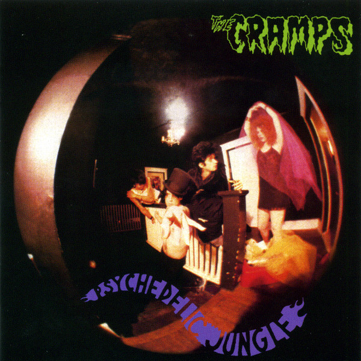
02Green Door
The Cramps – Psychedelic Jungle (1981)
orig. Bob Davie and lyrics written by Marvin Moore
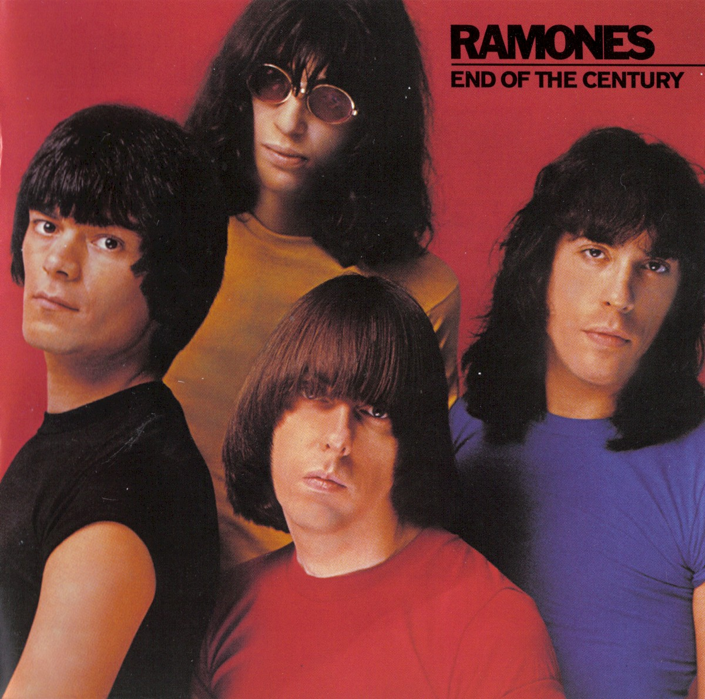
03Baby, I Love You
The Ramones – End Of The Century (Expanded & Remastered) (1980)
orig. The Ronettes
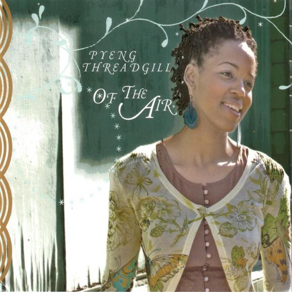
04Close To Me
Pyeng Threadgill – Of The Air (2005)
orig. The Cure
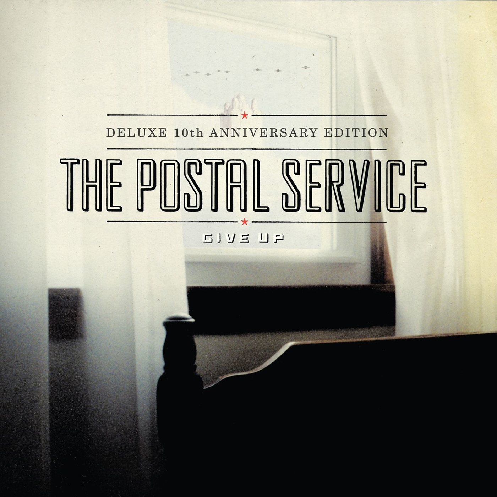
05We Will Become Silhouettes
The Shins – Give Up (2013)
orig. The Postal Service
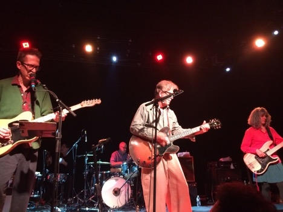
06Egyptian Reggae (orig. Jonathan Richman & the Modern Lovers)
The Feelies – Four Free Feelies Songs (1989)
orig. Live
 07
07
Twenty Four Hours
The Twilight Sad – Killed My Parents And Hit The Road (2014)
orig. Joy Divison
 08
08
Three Little Birds
The Postmarks – By the Numbers (2008)
orig. Bob Marley
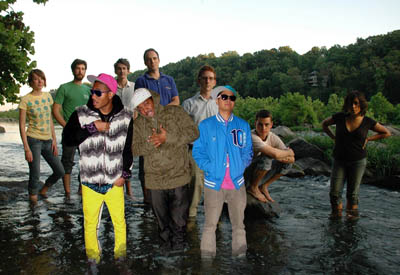
09We Are Mikey! We Are Rock!
The Hood Internet – thehoodinternet.com (ABX) (2008)
orig. Cool Kids vs. Le Loup
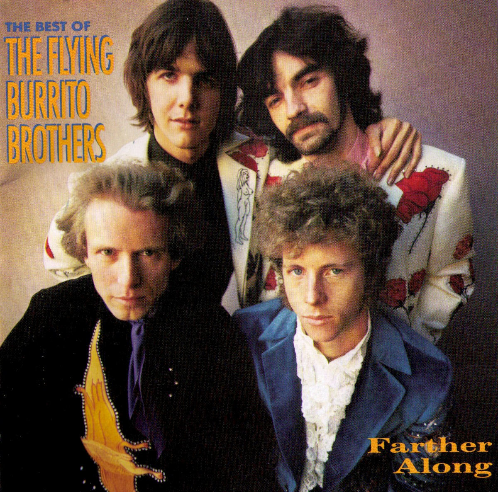
10Wild Horses
The Flying Burrito Brothers – Farther Along: The Best Of The Flying Burrito Brothers (1988)
orig. The Rolling Stones
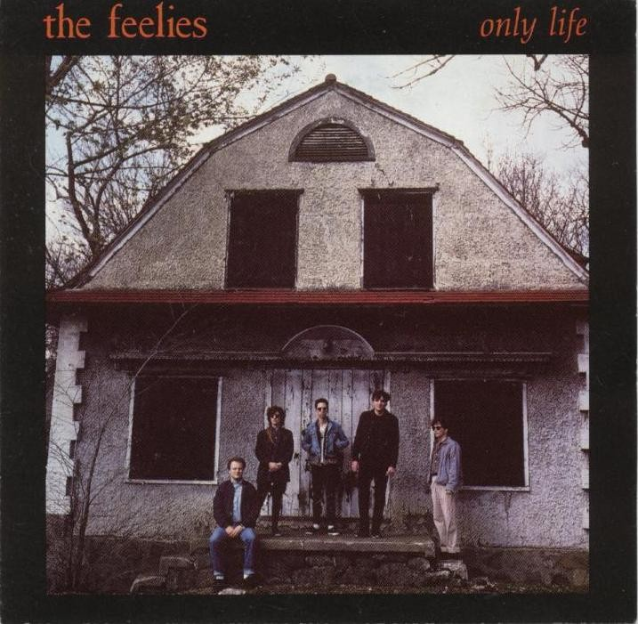
11What Goes On
The Feelies – Only Life (1988)
orig. Velvet Underground
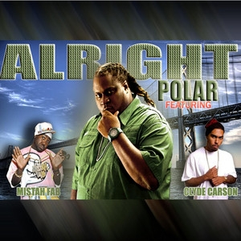
12Take the skinheads bowling
Polar – Feedback (2008)
orig. Camper Van Beethoven
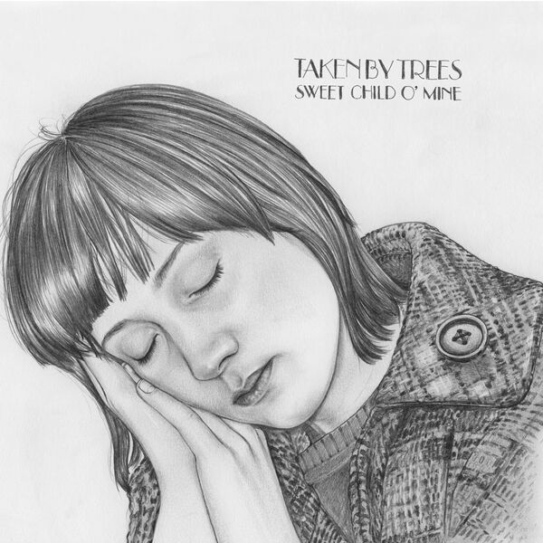
13Sweet Child O' Mine
Taken By Trees – Sweet Child o' Mine (2008)
orig. Guns N' Roses
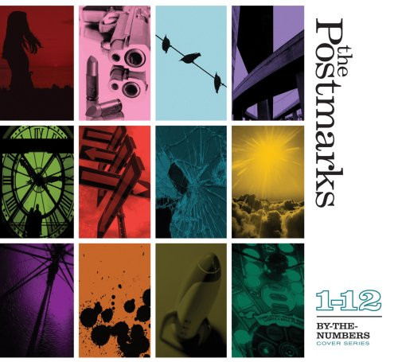
14You Only Live Twice
The Postmarks – By the Numbers (2008)
orig. Nancy Sinatra
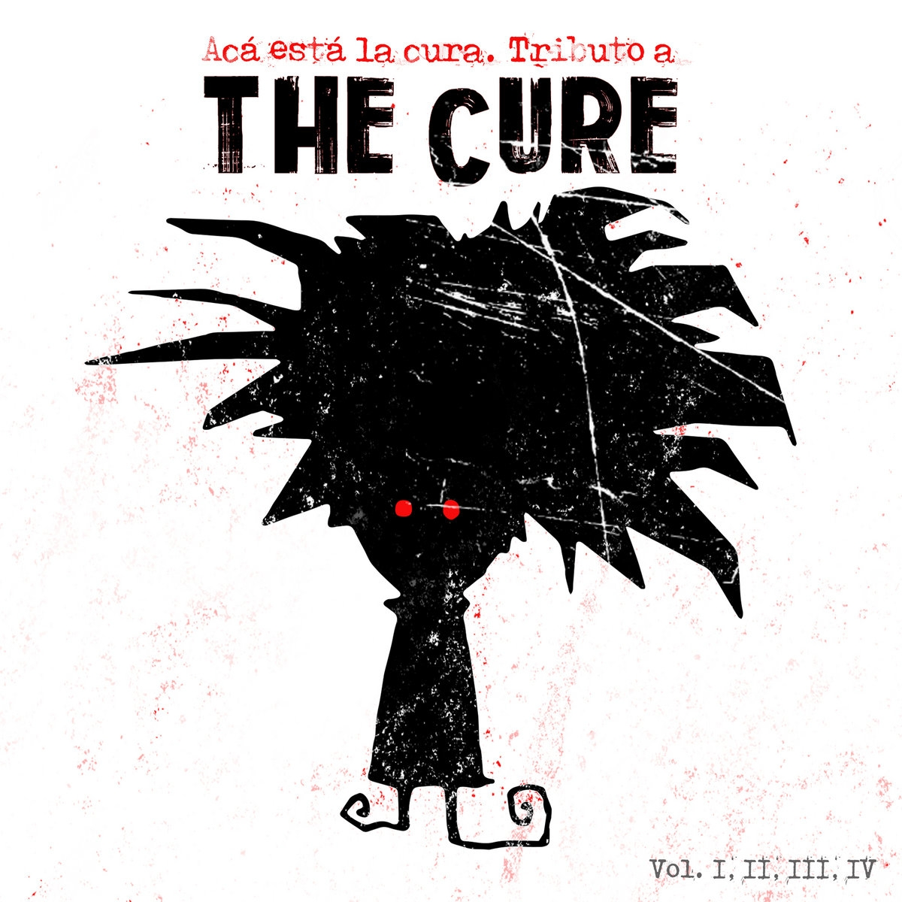
15In Between Days
EQ – Aca esta la cura. Tributo a The Cure (2007)
orig. The Cure
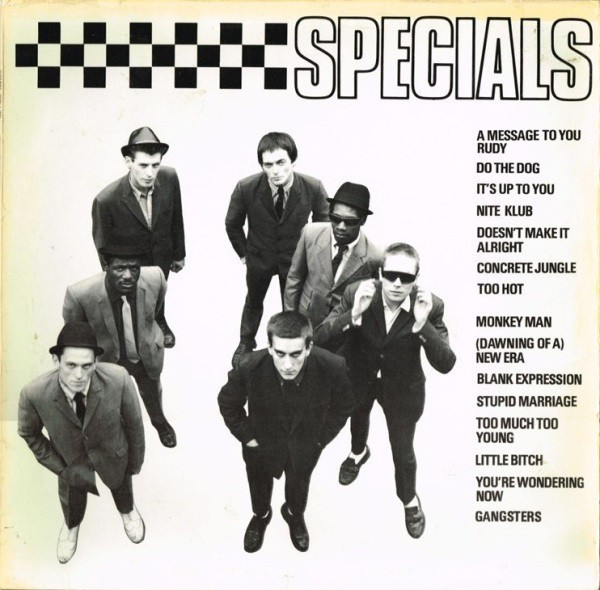
16A message to you Rudy
The Specials – Specials (1979)
orig. Dandy Livingstone, 1967
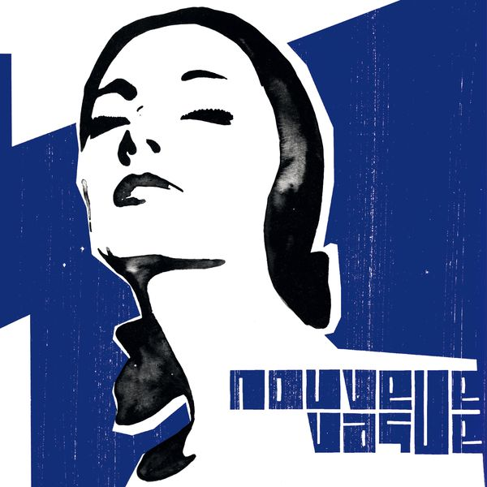
17Friday Night Saturday Morning
Nouvelle Vague – Nouvelle vague (2004)
orig. The Specials
 18
18
Catch
Devics – Just Like Heaven: a tribute to The Cure (2009)
orig. The Cure
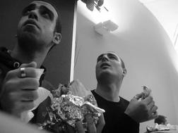
19Love Will Tear Us Apart
Albanopower – Internet Single (2009)
orig. Joy Divsion
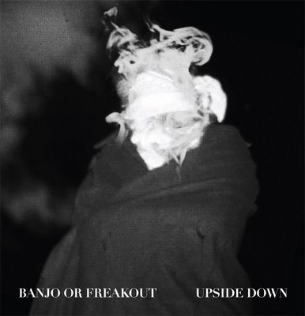
20Archangel
Banjo or Freakout – Covers (2008)
orig. Burial
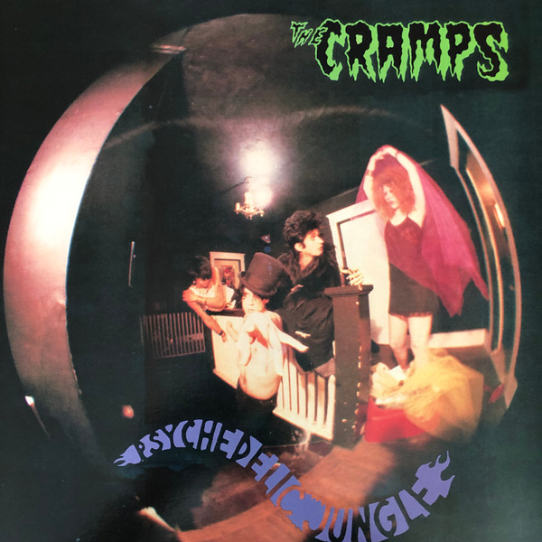
21Green Fuz
The Cramps – Psychedelic Jungle (1981)
orig. Randy Alvey / Green Fuz
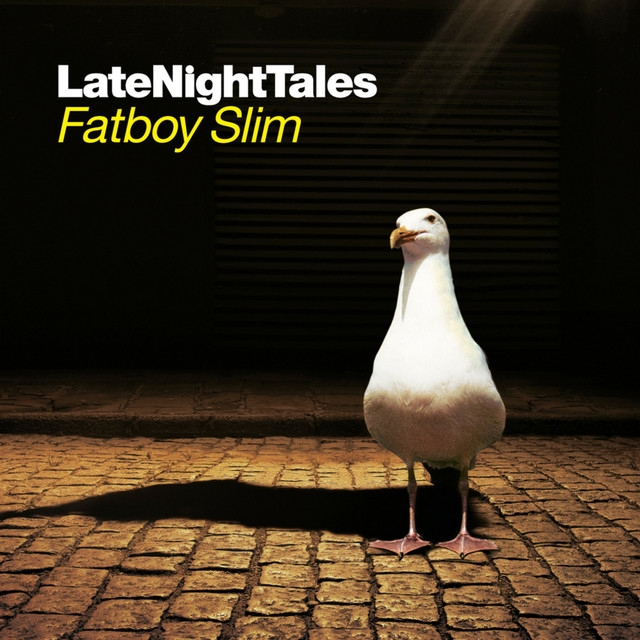
22Everything Is Everything
Bootsy Collins – LateNightTales: Fatboy Slim (2007)
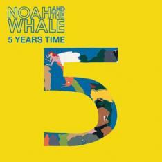
23Girlfriend In A Coma (orig. The Smiths)
Noah And The Whale – Internet Single (2009)
orig. Live Session